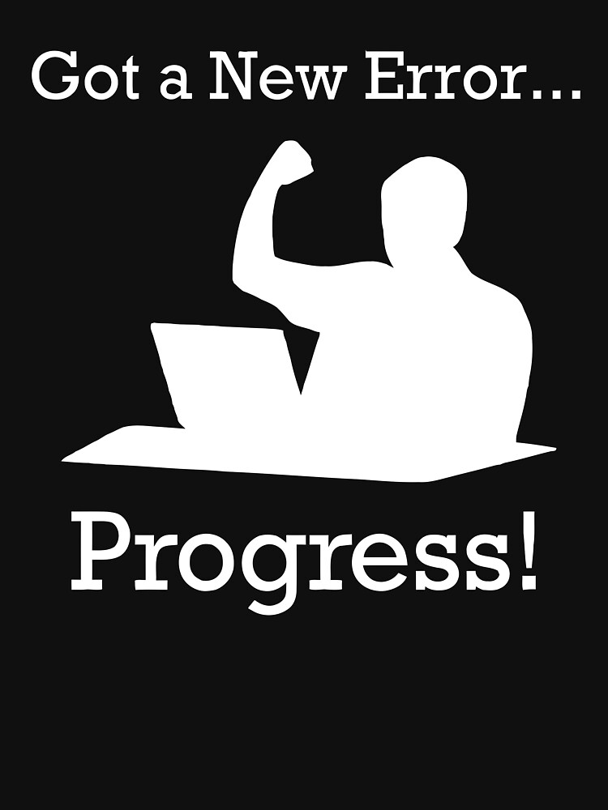

Introduction:
In the vast landscape of web development, every project embarked upon is an adventure waiting to unfold. Among my endeavors stands the myFlix API, a journey of discovery where challenges were met with determination, and triumphs celebrated with pride.
Chapter 1: The Spark of Innovation
It all began with a spark of innovation, a desire to construct a backend ecosystem where movie enthusiasts could delve into a repository of cinematic marvels. The objective was clear: to build a robust and scalable API that could handle a vast collection of movies, providing users with seamless access to movie details, user reviews, and personalized recommendations. Armed with ambition and a thirst for knowledge, I set out to transform this vision into a tangible reality using Express, MongoDB, and Passport.js.
Chapter 2: Navigating Uncharted Territories
As I ventured into the realm of Node.js development, I encountered the formidable challenge of architecting an API for the very first time. Each route became a puzzle to solve, each middleware an adventure into the unexplored depths of backend logic. One of the first hurdles was setting up the server and ensuring secure and efficient data handling. I meticulously researched best practices for RESTful API design and implemented authentication and authorization mechanisms using JSON Web Tokens (JWT). With perseverance as my compass and determination as my guide, I navigated through uncharted territories, one line of code at a time.

Chapter 3: The Dance of Error and Progress
In the intricate dance of error and progress, every stumble became a lesson learned, and every bug a catalyst for improvement. Initially entangled in a labyrinth of bugs, each one threatening to derail my journey, I learned to embrace errors not as hindrances but as stepping stones towards mastery. One of the significant challenges was ensuring that the API endpoints returned the correct data in the expected format. There were times when the data returned didn't match the structure required by the frontend, leading to unexpected results. Through careful debugging, learning from documentation, and seeking advice from mentors, I refined my understanding of handling data with MongoDB and Express. Guided by mentors and seasoned by experience, I turned these errors into opportunities for growth.
Chapter 4: Crafting the Tapestry of Design
As the scope of my project expanded, so did the challenge of crafting a robust backend architecture. The canvas before me was blank, awaiting the strokes of innovation and ingenuity. With trepidation and excitement intertwined, I embarked on the journey of design, weaving together elements of efficiency and scalability to create a tapestry that would support the intricate needs of the application. I designed the database schema from scratch, ensuring it could handle various data relationships and provide efficient querying capabilities. By leveraging MongoDB's flexibility and scalability, I created a database that could grow with the application.
Chapter 5: The Triumph of Resilience
Through the peaks and valleys of the development journey, one thing remained steadfast: resilience. With every hurdle surmounted and every obstacle conquered, I emerged stronger and more determined than before. A particularly challenging phase was implementing user authentication and authorization. Ensuring secure and reliable access to the API required careful planning and robust implementation. I integrated Passport.js for authentication and created custom middleware for authorization, ensuring only authorized users could access certain endpoints. The path was arduous, but the victory was sweet, as the myFlix Backend stood as a testament to perseverance and passion. The final solution not only met but exceeded the project objectives, providing a seamless and efficient user experience.
Conclusion:
In the ever-evolving landscape of web development, the creation of the myFlix Backend was not merely a project, but a saga of growth, exploration, and triumph. Through challenges tackled and barriers breached, I pressed forward, fueled by the conviction that with dedication and resolve, any endeavor is within reach. From optimizing database performance to implementing a scalable architecture, each step of the journey was a learning experience that honed my skills and expanded my horizons. As I embark on new adventures in the realm of web development, I carry with me the lessons gleaned and the experiences forged in the crucible of creation, forever shaping the path ahead.